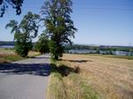
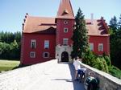
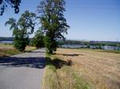
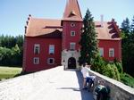

Cesty na kole — expedice 2003
| Kdy | 10.8. - 19.8.2003 |
|---|---|
| Kolik | 884 km |
| Účastníci | Zuzík, Mišák |
| Trasa | GoogleEarth mapa (kmz) |
| Odkazy | (galerie nedostupná) |
| Odkazy jinam | Greenway Praha - Viden, Interaktivní mapa Rakouska, Cyklostezky v rakousku, Vídeň |